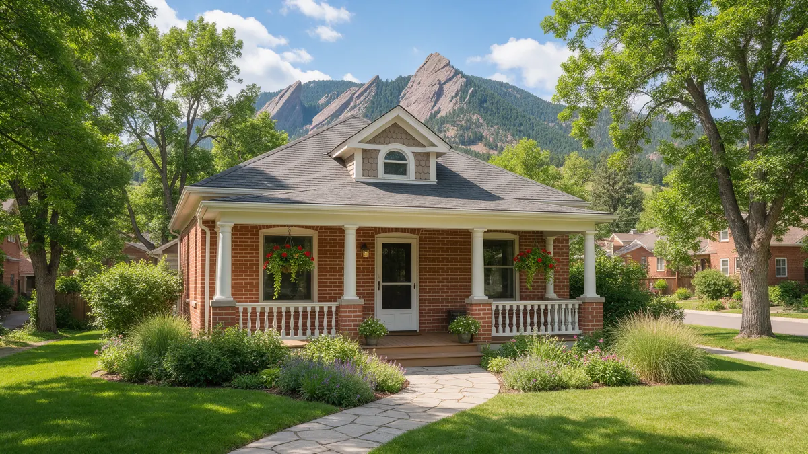

Boulder CO Plumber Guide for Leaks

If you are searching for a plumber in Boulder CO, start with the steps that limit damage and then move on to the decisions that follow. Plumbing Pros Colorado is a referral line that connects you with independent local plumbers. Below you will find what to do first, how to spot trouble early, how a plumber narrows down the cause, and how Boulder's setting at the foot of the Flatirons affects plumbing.
What to do right away
Find the main water shutoff and close it. In Boulder County homes it is often in a basement, a utility closet, or a crawl space, and tends to be a round wheel or a lever. Turn it off, open the lowest faucet, and then check that the water heater is not running dry.
If the leak is above you, move furniture and set out buckets. If water is near an outlet, keep clear until power is off at the panel. Take photos for your records and for anyone who needs to see them later.
- Close the main shutoff
- Drain a low faucet
- Cut power to wet areas from a dry spot
- Photograph the source
- Write down the timeline
Warning signs to catch early
Boulder has many mid-century homes in Martin Acres, Table Mesa and Baseline, as well as newer builds toward Gunbarrel and North Boulder. Spots that show a small leak include bubbling paint, a soft floor near a tub, a damp cabinet floor, and a toilet that keeps refilling.
Outside, a sprinkler zone that never dries or a wet strip along the line from the street can mean a buried leak. A water bill that rises in winter, when lawn watering has stopped, is another clue.
Boulder homes often have additions and basement apartments added over time. Ask the plumber to check whether those areas tie into the main house's lines, since added bathrooms can create awkward connections that fail first.
How a plumber diagnoses the problem
The plumber begins by asking what you noticed and where. A meter check shows whether water is leaking while everything is off. Gauges on a hose bib give pressure, and listening equipment or a thermal camera can help narrow a hidden leak to a few feet.
For drain trouble, a sewer camera runs through the line and shows cracks, roots and sags. Boulder's older streets near Pearl Street and the creek corridors often have clay or cast iron laterals, so a camera look is common.
Many Boulder homes were built before modern shutoff valves were standard at each fixture. If yours lack them, ask the plumber about adding stops under sinks and toilets. They turn a future leak into a small inconvenience.
Questions worth asking
What caused the leak, and could it happen again somewhere else? Is the pipe galvanized, copper, PEX or something else? Will the repair require opening walls, and who patches the drywall? Does the work need a city permit, and who handles it?
If you rent, tell your landlord right away and keep the plumber's findings in writing. If you own, ask whether the repair affects your homeowner coverage, and talk with your insurer before work starts.
If your house is near Boulder Creek or in a mapped drainage area, think about a backwater valve or sump pump that protects against sewer backup during storms. These are plumbing topics worth raising during any visit.
Repair or replace: how to think about it
One failed joint on an otherwise healthy line is usually a repair. Several pinholes in a short time suggest the pipe is failing from within, and replacing a run may be wiser than chasing each leak. Cast iron stacks that are rough inside and sewer lines with repeated root trouble also push toward replacement.
Boulder's approach to old buildings, including homes near Chautauqua and in historic districts, can affect how walls are opened. Ask the plumber to talk through the least disruptive way to reach the pipe.
Because Boulder is home to a large student population, short leases and turnover are common. Take dated photos of pipes and shutoffs at move-in so you can show the condition later.
Boulder factors that matter
Boulder Canyon and the foothills bring snowmelt and sudden storms, and a wet spring can raise groundwater around foundations. A wet basement is not always a plumbing leak, so ask the plumber to rule out supply and drain lines before blaming the foundation.
Winter nights on the Front Range can drop below 32°F, which threatens exposed pipes in garages and crawl spaces. Disconnect hoses in fall, insulate exposed lines, and know where your shutoff is before the first snow.
Frequently asked questions
Is it normal for pipes to knock after I fix a leak?
Knocking can come from water hammer when a valve closes quickly, or from loose pipe straps. It often shows up after plumbing work disturbs air in the line. If it continues, a plumber can check pressure and add supports or an arrestor. Wet spots can also come from condensation on cold pipes in humid weather. A plumber can tell the difference with a moisture meter.
Who handles a leak in a shared wall or duplex?
The owner of the pipe or the association usually handles it, depending on your documents. Tell the property manager or HOA right away and document the damage. A plumber can say whether the leak is on a shared line or inside your unit. Roommates should agree on who calls the plumber and who talks to the landlord, so reports do not get lost.
What can I do about hard water scale?
Scale can form in water heaters and fixtures over the years. Flushing the heater tank, cleaning aerators and asking a plumber about the condition of the anode rod help protect equipment. A camera run also shows where the cleanout is and how far the lateral runs, which helps if you plan landscaping.
Do I need to winterize an empty rental?
Yes, if the property will be vacant through a cold stretch. Keep the heat on at a modest setting, or have the water shut off and drained. Leave a note of where the main shutoff is for anyone who enters. Practice turning the valve so it does not seize. A stuck valve in an emergency is a second problem.
What should I do before a plumber arrives?
Clear access to the main shutoff, the water heater, and the area of the leak. Secure pets. Gather the timeline of what happened, any photos, and information about earlier repairs. That saves time and helps the plumber start with useful information. A toilet that keeps running is often a simple fix, but it can hide a leaking flapper that wastes water for days.
Plumbing services in Boulder
- Water Leak Repair
- Emergency Plumbing
- Drain Cleaning
- Water Heater Services
- Sewer Line Repair
- Gas Line Services
- Slab Leak Repair
- Pipe Repair & Replacement
- Toilet Repair
- Bathroom Plumbing
Nearby Colorado cities
- Water leak repair in Arvada
- Water leak repair in Colorado Springs
- Water leak repair in Broomfield
- Water leak repair in Woodland Park
Ready to talk to someone? Call (720) 794-0974 or visit a local plumber near Boulder.